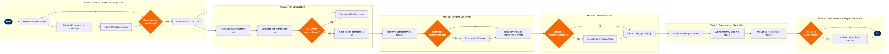

| Step | L4 Step Name | KPI / Target | Pain Point / Risk | Gate |
|---|---|---|---|---|
| 1.1 | Extract gate event data from AMS | Data extraction latency ≤15 min after period close | AMS event timestamps may be entered manually by ramp agents, introducing ±3 min inaccuracies that distort D0 calculations; no auto-capture at many regional stations | |
| 1.2 | Pull ACARS turnaround event timestamps | ACARS coverage ≥95% of narrowbody turns at hub stations | Regional and outstations with older ground equipment may have ACARS downlink gaps; fallback to manual log creates 5–8% data voids that inflate reported OTP | |
| 1.3 | Ingest baggage handling data from BRS | WorldTracer file ingestion success rate ≥99% | WorldTracer data latency at transborder stations (US/Canada/Mexico) can exceed 4 hours due to customs hold scanning delays, making same-day reporting unreliable | |
| 1.4 | Validate data completeness across all stations | Data completeness ≥98% of operated flights before KPI run proceeds | Redshift ingestion pipelines from SITA AMS rely on SFTP batch files; file delivery failures at outstations can silently drop entire station's data from the reporting run | ⚠ |
| 2.1 | Calculate D0 and D15 on-time departure metrics | System-wide D0 ≥78%; D15 ≥88% (IATA AHM 810 standard) | Carrier-caused vs. non-carrier delay classification is applied post-hoc via delay codes entered by agents — code 93 (ATC) vs code 15 (late aircraft) misclassification inflates ground ops performance metrics | |
| 2.2 | Compute gate and stand utilisation rate | Gate utilisation target ≥72% at primary hub gates; congestion index <1.2 at peak | AMS stand assignment data does not reflect real-time remote-stand tows, causing gate utilisation to be overstated for aerobridged stands and understated for remote apron positions | |
| 2.3 | Calculate baggage mishandling and delivery KPIs | Mishandled bag rate ≤3.5 per 1,000 pax (IATA World Baggage Report benchmark); first-bag-to-belt ≤20 min | WorldTracer only captures reported mishandled bags; unreported incidents (bag on wrong belt, passenger retrieves wrong bag) are invisible to the KPI, creating systematic under-reporting at busy stations | |
| 2.4 | Assess computed KPIs against threshold rules | 100% of KPI metrics receive a RAG status within 30 min of data validation | Threshold rules are stored as hardcoded SQL in Redshift procedures; changes require a DBA ticket and 48-hour change-management approval — preventing rapid threshold adjustment during irregular ops (IROPS) periods | ⚠ |
| 3.1 | Build station scorecard dashboard in Tableau | Scorecard refresh latency ≤60 min after reporting period close | Tableau Server extract refresh contention at period close (multiple dashboards refreshing simultaneously) causes 30–90 min delays in scorecard availability, frustrating station managers on early shifts | |
| 3.2 | Identify underperforming stations via threshold alerts | Underperformer identification completed within 2 hours of scorecard publication | Alert logic in Tableau uses static thresholds that do not account for seasonal demand variation — stations operating above-plan capacity in peak periods are incorrectly flagged Red, creating alert fatigue | |
| 3.3 | Conduct root cause drill-down for Red-flagged stations | Root cause assigned for ≥90% of Red-flagged stations within 4 hours | Delay code data quality (entered by ramp agents under time pressure) is insufficient for reliable root cause analysis — IATA AHM delay code 15 (late aircraft arrival) frequently masks ground-caused delays | ⚠ |
| 4.1 | Issue performance improvement notice to station manager | PIN issued within 24 hours of Red-flag identification for stations with ground-caused root cause | PINs are issued via email with no structured tracking system — follow-up compliance is manual, leading to 40% of PINs having no documented station response within the 30-day window | |
| 4.2 | Assess whether VP Ground Ops escalation is required | Escalation decision made within 48 hours of Red-flag identification | Escalation thresholds are not codified — decisions rely on individual manager judgement, leading to inconsistent escalation behaviour across regions and delayed VP awareness of systemic station failures | ⚠ |
| 4.3 | Brief VP Ground Ops with station performance summary | VP briefing delivered within 72 hours of escalation trigger | VP briefing packs are manually compiled from Tableau exports and email threads — no single-source-of-truth system means briefing preparation takes 4–6 hours and version mismatches occur between analyst and manager copies | |
| 5.1 | Publish daily ops performance briefing | Daily briefing distributed by 07:00 local time at each hub station | Tableau Server scheduled subscription emails require SMTP relay through corporate IT — relay outages (averaging 2 per month) cause delayed or failed briefing delivery with no automatic retry or fallback channel | |
| 5.2 | Distribute weekly station scorecard to station managers | Weekly scorecard delivered every Monday by 09:00 local hub time | Scorecard distribution list is maintained manually in a shared Excel file — personnel changes at stations result in stale distribution lists, with outgoing managers receiving reports and replacement managers missing them for up to 4 weeks | |
| 5.3 | Submit monthly KPI report to senior leadership | Monthly report submitted to SVP Operations by the 5th calendar day of the following month | Integrating financial cost data from SAP S/4HANA with operational KPI data from Redshift requires a manual reconciliation step — no automated connector exists between operational and financial data layers | |
| 6.1 | Analyse 13-week rolling performance trends | Trend analysis completed quarterly; covers 100% of hub and focus-city stations | Seasonal demand data from Amadeus SkyCAST is available to network planning but not integrated into the ground ops reporting layer — analysts apply manual seasonality adjustments based on prior-year data, introducing estimation error | |
| 6.2 | Review and update KPI targets in BI platform | KPI targets reviewed at minimum quarterly; changes approved within 5 business days of review | KPI thresholds stored in Tableau data sources cannot be version-controlled — rollback after an erroneous threshold change requires DBA intervention to restore a Redshift snapshot, causing 4–8 hours of incorrect reporting | ⚠ |